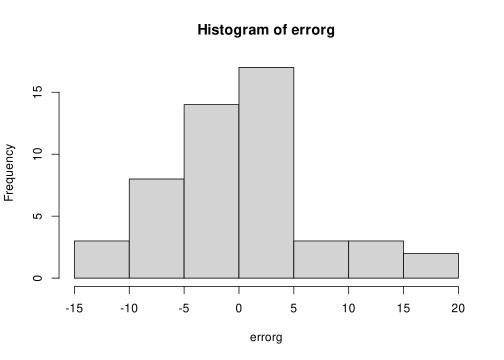
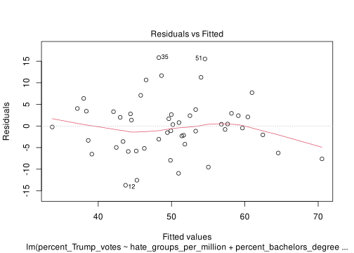
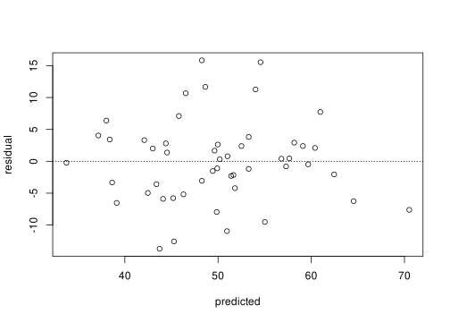
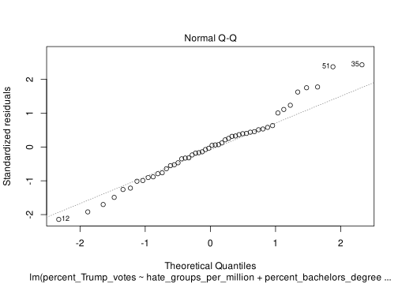
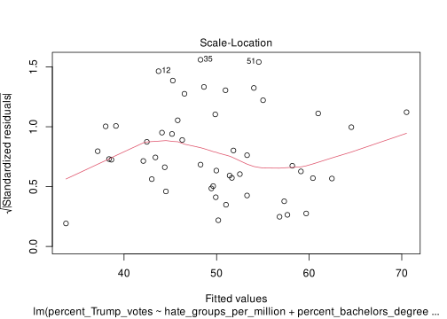
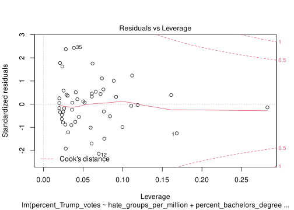
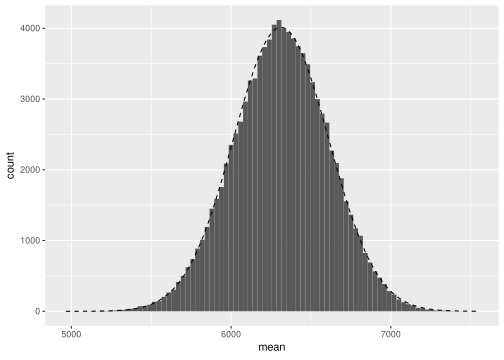
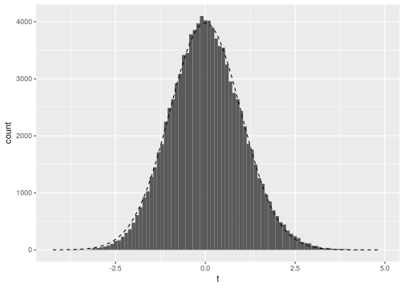

Chapter 4 Regression
4.1 Estimating an testing a simple regression model
Regression analysis is done through the lm function, with the following syntax: lm(formula, data,...). The first argument is called formula and expects a symbolic description of your model. I will tell you more about how to specify models with the formula syntax later, when we discuss moderation. For now, a few simple examples will suffice. To specify a simple regression model where you predict a dependent variable y by a predictor x, you would use the formula
y ~ x
On the left-hand side of the formula you need to provide the name of the dependent variable. After the name of the dependent variable, you need to put a tilde (~) (which you can read is “is modelled as a function of”). On the right-hand side, you then provide the name of the predictor. R will automatically include an intercept in the model. In R, the intercept is actually represented as a special predictor which always (for every row in the data set) has the value 1. The formula above is actually interpreted as
y ~ x + 1
Because the intercept is included in most models, the authors of R have decided to save the you trouble of typing + 1 in each formula, by making this part of the formula implicit. You can fit a model without an intercept (which is the same as fixing the value of the intercept to 0), by instead of + 1, putting - 1 in the formula, as in
y ~ x - 1
The second argument of the lm function is called data and expects the name of the data.frame in which the variables are stored.
To see how the lm function works in practice, let’s open the trump2016 data provided in the sdamr package. This is the data analysed in Chapter 4 and 5. We open and inspect the data as usual:
library(sdamr)
# load the Trump data
data("trump2016")
# remove the data from the District of Columbia (Washintgon D.C.)
dat <- subset(trump2016,state != "District of Columbia")
head(dat)## state hate_groups population hate_groups_per_million
## 1 Alabama 27 4863300 5.55
## 2 Alaska 0 741894 0.00
## 3 Arizona 18 6931071 2.60
## 4 Arkansas 16 2988248 5.35
## 5 California 79 39250017 2.01
## 6 Colorado 16 5540545 2.89
## percent_bachelors_degree_or_higher percent_in_poverty percent_Trump_votes
## 1 15.4 18.5 62.9
## 2 29.7 10.4 52.9
## 3 27.7 17.4 49.5
## 4 21.8 18.7 60.4
## 5 32.3 15.4 32.7
## 6 39.2 11.5 44.4You can see that there are a number of variables in the dataset (and not all of these were analysed in the book). For more information on the variables in the dataset, you can call the help file with ?trump2016.
Now let’s estimate a simple regression model to predict the percentage of votes for Trump by the number of hate groups per million citizens:
##
## Call:
## lm(formula = percent_Trump_votes ~ hate_groups_per_million, data = dat)
##
## Coefficients:
## (Intercept) hate_groups_per_million
## 42.9 2.3I’ve named the resulting object modg for MODEL G. You can pick any name you like for R objects. Note that when you just print a fitted linear model (by e.g., typing the name of the object modg), R will show the parameter estimates, but nothing else. You can get the important statistics by calling the summary function on the fitted model:
##
## Call:
## lm(formula = percent_Trump_votes ~ hate_groups_per_million, data = dat)
##
## Residuals:
## Min 1Q Median 3Q Max
## -14.8206 -5.8570 -0.0529 5.2632 20.7883
##
## Coefficients:
## Estimate Std. Error t value Pr(>|t|)
## (Intercept) 42.8968 2.4094 17.804 < 2e-16 ***
## hate_groups_per_million 2.3004 0.6715 3.426 0.00127 **
## ---
## Signif. codes: 0 '***' 0.001 '**' 0.01 '*' 0.05 '.' 0.1 ' ' 1
##
## Residual standard error: 9.142 on 48 degrees of freedom
## Multiple R-squared: 0.1965, Adjusted R-squared: 0.1797
## F-statistic: 11.74 on 1 and 48 DF, p-value: 0.001265This provides quite a lot of useful information. The output of the summary function consists of four parts:
Callsimply shows you the call to thelmfunction used to fit the model (including the model formula)Residualsshows you some summary statistics for the prediction errors of the estimated model (which are often referred to as residuals)Coefficientsshows you a table with:- the name of variable for which the parameter was estimated
Estimate: the estimated parametersStd. Error: the standard error of the estimates (this is the standard deviation of the sampling distribution of the estimates)t value: the t statistic of the hypothesis test that the true value of the parameter is equal to 0.Pr(>|t|): the p-value, which is the probability that, given that the null hypothesis is true (i.e. the true value of the parameter is equal to 0), you would find a t-statistic at least as extreme as the one computed found for this data.
- Some overall model statistics:
Residual standard error: this is and unbiased estimate of the standard deviation of the errors.Multiple R-squared:the \(R^2\) or proportion of variance of the dependent variable “explained” by the model.Adjusted R-squared: an unbiased estimate of the true value of \(R^2\)F-statistic: the results of a model comparison comparing the estimated model (MODEL G) to a MODEL R which only includes an intercept.
4.2 Model comparisons
Comparing regression models and computing the \(F\) statistic can be done through the anova() function. Let’s first estimate a restricted version of MODEL G above where we fix the slope of hate_groups_per_million to 0. This MODEL R is identical to a model with only an intercept. We can estimate this by not providing any predictor names, but now explicitly providing the intercept term 1.
We can then compute the \(F\) test by entering this MODEL R, and the MODEL G we estimated earlier, as arguments in the anova function:
## Analysis of Variance Table
##
## Model 1: percent_Trump_votes ~ 1
## Model 2: percent_Trump_votes ~ hate_groups_per_million
## Res.Df RSS Df Sum of Sq F Pr(>F)
## 1 49 4992.2
## 2 48 4011.4 1 980.78 11.736 0.001265 **
## ---
## Signif. codes: 0 '***' 0.001 '**' 0.01 '*' 0.05 '.' 0.1 ' ' 1the output lists the formula’s of the models we compare, and then provides a table with test results. The columns in this table are
* Res.Df: the denominator degrees of freedom, i.e. \(n=-\text{npar}(M)\)
* RSS: the “residual sum of squares” or Sum of Squared Error of the model, i.e. \(\text{SSE}(M)\)
* Df: the numerator degrees of freedom,,i.e. $(G) - (R)
* Sum of Sq: the reduction in the Sum of Squared Error, i.e. \(\text{SSE}(R) - \text{SSE}(R)\)
* F: the \(F\) statistic of the test
* Pr(>F): the p-value of the test.
We can obtain a test for the intercept by fitting a different MODEL R, now without an intercept, and comparing it to MODEL G
# fit a MODEL R without an intercept (through " - 1")
modr <- lm(percent_Trump_votes ~ hate_groups_per_million - 1, data=dat)
anova(modr,modg)## Analysis of Variance Table
##
## Model 1: percent_Trump_votes ~ hate_groups_per_million - 1
## Model 2: percent_Trump_votes ~ hate_groups_per_million
## Res.Df RSS Df Sum of Sq F Pr(>F)
## 1 49 30501.7
## 2 48 4011.4 1 26490 316.98 < 2.2e-16 ***
## ---
## Signif. codes: 0 '***' 0.001 '**' 0.01 '*' 0.05 '.' 0.1 ' ' 1The output of the anova function isn’t particularly pretty. Also, if you want to do multiple model comparisons, first estimating models and then comparing them with the anova function becomes a little cumbersome. An easier way to obtain all the model comparisons is to use the Anova function from the car (Fox, Weisberg, and Price 2020) package to automatically construct different possible versions of MODEL R, each being one particular restriction of MODEL G which fixes the relevant parameter to 0. If you don’t have the car package installed yet, you need to install it first (e.g. by install.packages("car"). You can then call:
## Anova Table (Type III tests)
##
## Response: percent_Trump_votes
## Sum Sq Df F value Pr(>F)
## (Intercept) 26490.3 1 316.981 < 2.2e-16 ***
## hate_groups_per_million 980.8 1 11.736 0.001265 **
## Residuals 4011.4 48
## ---
## Signif. codes: 0 '***' 0.001 '**' 0.01 '*' 0.05 '.' 0.1 ' ' 1Note that it is important to give the type = 3 argument in the Anova function. This will construct MODEL R by fixing a single parameter to 0 in turn (i.e. first fixing \(\beta_0=0\) and estimating all other parameters, then another model fixing \(\beta_1 = 0\) for estimating all other parameters), etc.
4.3 Estimating and testing a multiple regression model
To specify a multiple regression model for a dependent variable named y and with three predictors, named x1, x2, and x3, you would use the formula
y ~ x1 + x2 + x3
This is similar to the earlier formula, but you now need to provide the names of all the predictors, separated by a + sign.
For instance, we can fit a model with two predictors (which we will call modg, for MODEL G), as follows:
modg <- lm(percent_Trump_votes ~ hate_groups_per_million + percent_bachelors_degree_or_higher, data=dat)
summary(modg)##
## Call:
## lm(formula = percent_Trump_votes ~ hate_groups_per_million +
## percent_bachelors_degree_or_higher, data = dat)
##
## Residuals:
## Min 1Q Median 3Q Max
## -13.7268 -4.0621 0.0426 2.8937 15.8359
##
## Coefficients:
## Estimate Std. Error t value Pr(>|t|)
## (Intercept) 81.9945 6.1555 13.321 < 2e-16 ***
## hate_groups_per_million 1.3138 0.5102 2.575 0.0132 *
## percent_bachelors_degree_or_higher -1.2187 0.1839 -6.625 3.03e-08 ***
## ---
## Signif. codes: 0 '***' 0.001 '**' 0.01 '*' 0.05 '.' 0.1 ' ' 1
##
## Residual standard error: 6.643 on 47 degrees of freedom
## Multiple R-squared: 0.5845, Adjusted R-squared: 0.5668
## F-statistic: 33.06 on 2 and 47 DF, p-value: 1.087e-09the output of the summary function contains the same elements as before, but the table of coefficients now includes an additional row for percent_bachelors_degree_or_higher. Also, note that all the estimates are different, because the slopes reflect unique effects, and these differ compared to models with other predictors. Finally, I’d like to point out that the last row of the output contains the “whole model test”, which compares the estimated model to a model with only an intercept. Recall that the estimate of the intercept in this latter model equals the sample mean. So we are now comparing a model with two predictors to a model which predicts all values as the sample mean. The difference in the number of estimated parameters for this comparison is \(\text{npar}(G) - \text{npar}(R) = 3 - 1 = 2\). Hence, the degrees of freedom are \(\text{df}_1 = 2\) and \(\text{df}_2 = n - \text{npar}(G) = 50 - 3 = 47\).
We can also get all the model comparisons for this MODEL G through:
## Anova Table (Type III tests)
##
## Response: percent_Trump_votes
## Sum Sq Df F value Pr(>F)
## (Intercept) 7830.7 1 177.4381 < 2.2e-16 ***
## hate_groups_per_million 292.7 1 6.6318 0.01322 *
## percent_bachelors_degree_or_higher 1937.2 1 43.8956 3.028e-08 ***
## Residuals 2074.2 47
## ---
## Signif. codes: 0 '***' 0.001 '**' 0.01 '*' 0.05 '.' 0.1 ' ' 1Finally, we can also obtain a “whole model test”, by comparing an intercept-only MODEL R to the full MODEL G. This is best done through the anova function as follows:
modr <- lm(percent_Trump_votes ~ 1, data=dat)
modg <- lm(percent_Trump_votes ~ hate_groups_per_million + percent_bachelors_degree_or_higher, data=dat)
anova(modr,modg)## Analysis of Variance Table
##
## Model 1: percent_Trump_votes ~ 1
## Model 2: percent_Trump_votes ~ hate_groups_per_million + percent_bachelors_degree_or_higher
## Res.Df RSS Df Sum of Sq F Pr(>F)
## 1 49 4992.2
## 2 47 2074.2 2 2918 33.06 1.087e-09 ***
## ---
## Signif. codes: 0 '***' 0.001 '**' 0.01 '*' 0.05 '.' 0.1 ' ' 14.4 Residuals and predicted values
You can obtain the prediction errors by the calling the residuals function on the fitted model.
## 1 2 3 4 5 6
## -7.618118 7.101376 -2.152059 -2.055564 -12.570794 6.382163This returns a vector with, for each case in the data (each row in the data frame), the error term \(\hat{\epsilon}_i\). Note that we are only displaying the first six elements through the head function.
You can obtain the predicted values by calling the predict function on the fitted model.
## 1 2 3 4 5 6
## 70.51812 45.79862 51.65206 62.45556 45.27079 38.01784This returns a vector with for, each case in the data, the predicted value \(\hat{Y}_{M,i}\). You can use these variables to create e.g. a histogram of the errors:
 and a predicted by residual plot
# scatterplot of predicted vs residual
plot(predictg, errorg, xlab = "predicted", ylab = "residual")
# add a horizontal line (h=0 is for horizontal at 0,
# and lty = 3 makes it a dotted line
abline(h=0,lty=3)
You can also call the plot function directly on the fitted model, which produces a range of plots to assess the model assumptions:

4.5 Plotting pairwise scatterplots for many variables
A final tip relates to exploring relations between many variables (e.g. potential predictors and dependent variables). While you can inspect pairwise relations between variables by creating a scatterplot for each pair of variables, this quickly becomes tedious. You can save yourself some work by using a function that produces a matrix of pairwise scatterplots directly. One option for this is to use the pairs function, and supply this with a selection of variables in a data.frame. For instance, in the data set we considered now, we might be interested in the relations between hate_groups_per_million, percent_bachelors_degree_or_higher, percent_in_poverty, and percent_Trump_votes. We can obtain a matrix of all pairwise scatterplots between these variables as follows (note that rather than typing the variable names, I’m selecting column 4 to 7, which correspond to these variables):

If you don’t like the look of these base R graphics and prefer ggplot2, you can use the ggpairs function from the GGally (Schloerke et al. 2020) package to get a similar plot:

References
Fox, John, Sanford Weisberg, and Brad Price. 2020. Car: Companion to Applied Regression. https://CRAN.R-project.org/package=car.
Schloerke, Barret, Di Cook, Joseph Larmarange, Francois Briatte, Moritz Marbach, Edwin Thoen, Amos Elberg, and Jason Crowley. 2020. GGally: Extension to Ggplot2. https://CRAN.R-project.org/package=GGally.